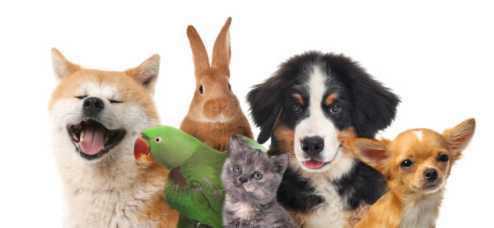

🐶 Sobre la adopción 😸
Adoptar una mascota es un acto de amor que cambia vidas: la tuya y la de un ser que espera una segunda oportunidad. Muchas de las mascotas que rescatamos han pasado por situaciones difíciles, y al abrirles la puerta de tu hogar, les das una nueva vida llena de cariño, protección y cuidado.
En nuestro centro, cada animal recibe atención médica, alimento, un lugar seguro donde dormir y mucho amor. Antes de ser adoptados, todos son desparasitados, vacunados y esterilizados para garantizar su salud.
